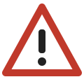

Buckle up
Everyone in the vehicle should wear a seatbelt on every trip, even short ones.

Road crashes are a daily danger for drivers, motorcyclists, passengers and pedestrians in Angola. Learn the signs, understand common offences and know what to do in an emergency.
Open the guide Take the quizEveryone in the vehicle should wear a seatbelt on every trip, even short ones.
Motorbike riders and passengers need a fastened helmet. Head injuries are the biggest danger.
Alcohol slows your reactions. Choose a sober driver or a taxi.
A message can wait. Keep your eyes and hands on the road.
Know a road with a missing sign, a deep hole or a dangerous crossing? Tell us.